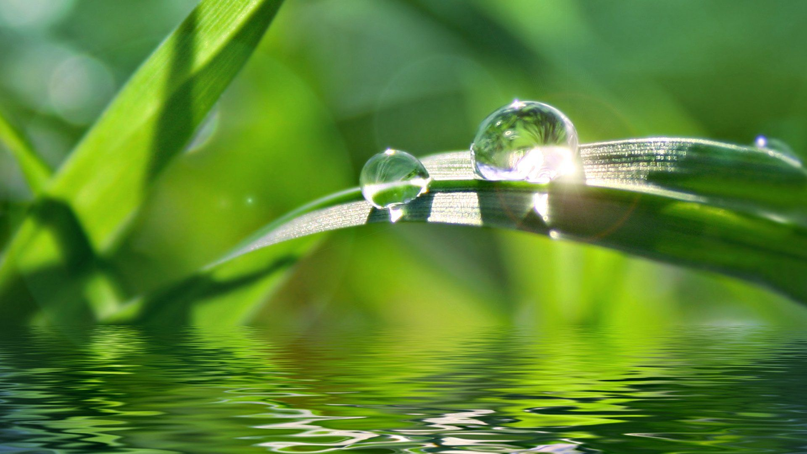

Sejarah

Ukiran Embun terbentuk tahun 2018 oleh seorang anak SMA yang tertarik pada tulisan. Ia mencoba untuk
mengungkapkan rasa melalui tulisan, hingga terbentuklah tagline "Embun yang mengukir rasa segenap
insan tuk menuai kebermanfaatan yang lebih luas".
Dalam mengungkapkan rasa, tak sedikit manusia yang lebih memilih menulis daripada berbicara. Merasa
lebih nyaman berbicara pada dirinya sendiri daripada berbicara dengan orang lain. Bertemu dengan
aneka ragam karakteristik manusia, membuatnya semakin bingung. Siapakah manusia yang bisa
dipercaya?. Sampai akhirnya, tulisan menjadi sahabat yang paling dipercaya ketika ingin bercerita.
Berharap ada manfaat dari rasa yang terungkap pada sebuah tulisan. Berharap ada doa-doa baik yang
terpanjat untuk kebahagiaan dunia dan akhirat.
Semoga bermanfaat.